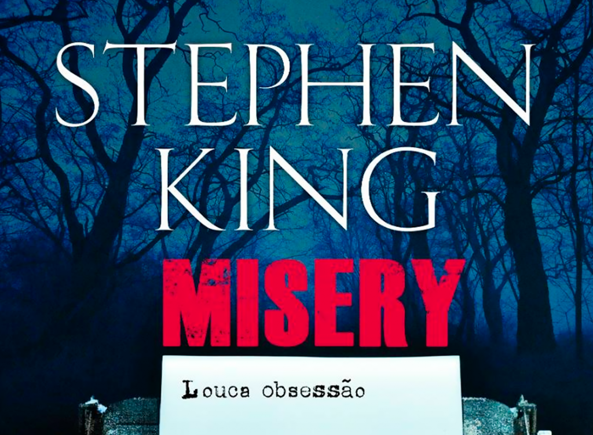

Misery
Misery é um romance de suspense psicológico escrito por Stephen King e publicado pela primeira vez em 1987. A obra conta a história de um famoso escritor que é mantido em cativeiro por sua fã número um, após sofrer um acidente de carro. A trama é uma metáfora sobre os desafios do sucesso, da fama e do processo criativo.
Sinopse
Paul Sheldon é um renomado escritor de uma série de romances populares que envolve a personagem "Misery Chastain". Após completar seu novo manuscrito e encerrar a saga de Misery, Paul sofre um acidente de carro e é resgatado por Annie Wilkes, uma enfermeira que se autoproclama sua maior fã. No entanto, ao descobrir que Paul matou sua personagem favorita no novo livro, Annie fica furiosa e o mantém preso, forçando-o a reescrever o romance. A história se desenrola em uma tensa batalha psicológica entre o autor e sua captora.
Informações Gerais
| Gênero | Suspense Psicológico, Terror |
|---|---|
| Data de Lançamento | 8 de junho de 1987 |
| Autor | Stephen King |
| Número de Páginas | 320 (edição original) |
| Ambientação | Casa de Annie Wilkes, Colorado |
| Principais Personagens | Paul Sheldon, Annie Wilkes |
| Adaptações | Filme de 1990, Peças de Teatro |